GRASS GIS in the cloud: actinia geoprocessing

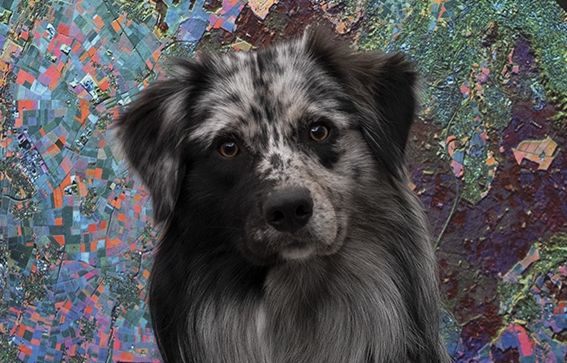 |
 |
||
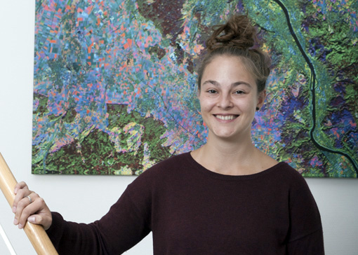 |
|||
"bring algorithm to the data"
exploit GRASS GISfunctionality viaHTTP REST API
GRaaSGRASS as a Service
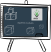
REST API on top
- List locations, mapsets, vector-, raster- and spatio-temporal data as resources
- Enable usage of GRASS modules
- User Management - Groups for mapset access - Roles e.g. for pixel limits, number of processes and calculation duration limits
- Mapset locking to avoid conflicts
- GRASS DB management

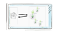
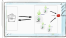
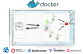
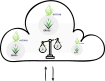
GET /locations
{
"locations": [
"latlong_wgs84",
"ECAD",
"nc_spm_08"
],
"status": "success"
}
GET /locations/nc_spm_08/mapsets
...
"process_log": [
{
"executable": "g.mapsets",
"id": "1",
"parameter": [
"separator=newline",
"-l"
],
"return_code": 0,
"run_time": 0.10045695304870605,
"stderr": [
"Available mapsets:",
""
],
"stdout": "PERMANENT\nlandsat\nmodis_lst\n"
}
],
"process_results": [
"PERMANENT",
"landsat",
"modis_lst"
],
...
GET /locations/nc_spm_08/mapsets/PERMANENT/raster_layers
...
"process_results": [
"aspect",
"basin_50K",
"boundary_county_500m",
"elev_lid792_1m",
"elev_ned_30m",
"elev_srtm_30m",
"elev_state_500m",
"elevation",
"elevation_shade",
"towns",
...
"urban",
"zipcodes",
"zipcodes_dbl"
],
...
GET /locations/nc_spm_08/mapsets/PERMANENT/raster_layers/elevation/render
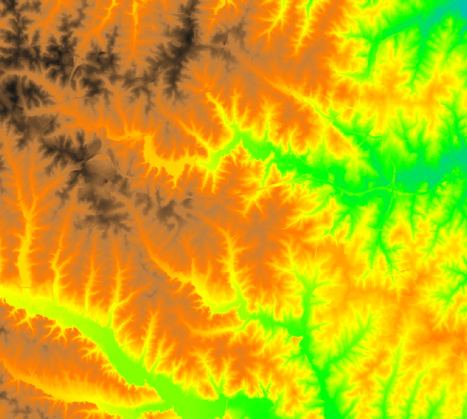
User defined processing
- ephemeral
- persistent
- GRASS modules
- importer/exporter
- python scripts
- cmd (GDAL, PROJ, snappy)
- ...
POST /locations/nc_spm_08/processing_async_export
POST /locations/nc_spm_08/mapsets/my_new_mapset/processing_async
{
"list": [
{
"module": "r.slope.aspect",
"id": "r_slope_aspect_1",
"inputs": [
{
"param": "elevation",
"value": "elev_ned_30m@PERMANENT"
}
],
"outputs": [
{
"export": {
"format": "GTiff",
"type": "raster"
},
"param": "slope",
"value": "elev_ned_30m_slope"
}
],
"flags": "a"
}
],
"version": "1"
}
1) --> curl -X POST -u myuser:mypassword -d @${PROCESS_CHAIN} \
-H 'Content-Type: application/json' \
https://actinia.mundialis.de/api/v3/locations/nc_spm_08/processing_async_export
JSON with status <-- 2)
3) --> poll status
JSON with resource URLs <-- 4)
5) --> GET resources from URLs
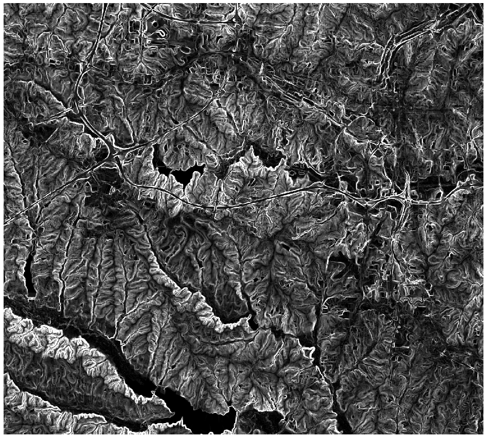
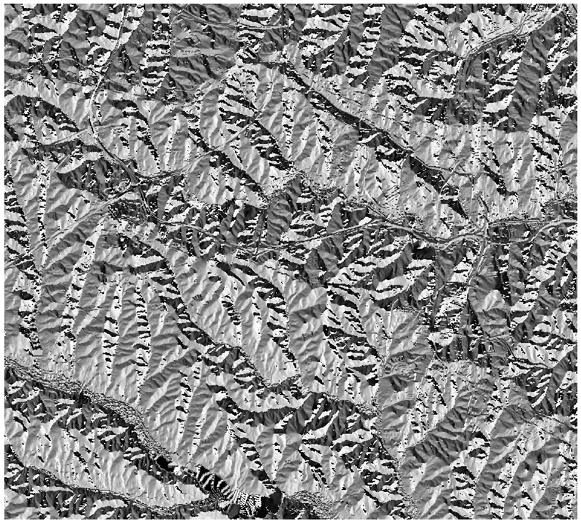
"bring algorithm to the data"
- via predefined functionalities
- via Importer (/Exporter)
- Download from ESA API hub
- from local storage (as provided by DIAS platforms)
- Amazon AWS
- Google Cloud Storages
- ...
curl -X POST -u myuser:mypassword -d @${PROCESS_CHAIN} \
-H 'Content-Type: application/json' \
https://actinia.mundialis.de/api/v3/sentinel2_process/ndvi/
S2B_MSIL1C_20190630T090559_N0207_R050_T35TMK_20190630T113444
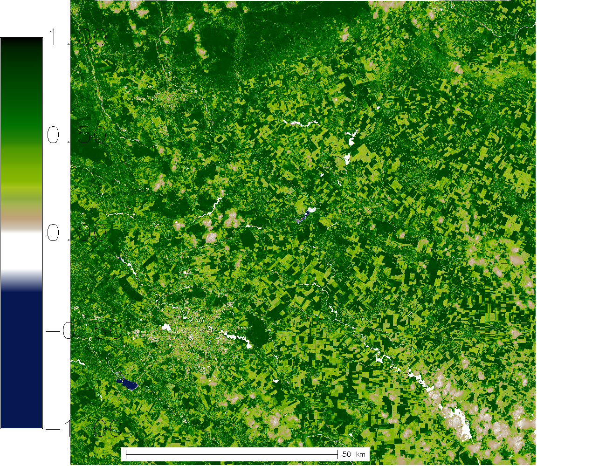
## More features
- ace (actinia command execution via GRASS GIS)
- advanced usage with GRASS addons
- openEO support - openeo-grassgis-driver converts processing requests (process graphs)
into actinia jobs. The openEO core API (https://openeo.org; H2020 project) is
a standardized interface supporting multiple backends.
- STAC support
- Keycloak integration
- Process chain templating
- ...
## Outlook
- enhanced STAC support
- combined usage of tiling- and parallel plugin
- automatisation of actinia worker startup
- more sophisticated job queues and message queues in general
- restructure in smaller pieces / microservices
- OGC API processes ?
- ...
actinia became an OSGeo community project in 2019!

Thank You!Questions?
Presentation created with Inkscape and impress.js Icons designed by Freepik, Smashicons and surang from Flaticon